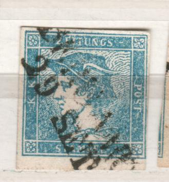
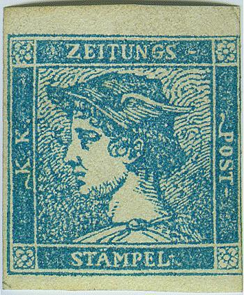
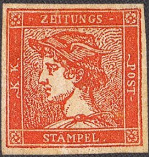
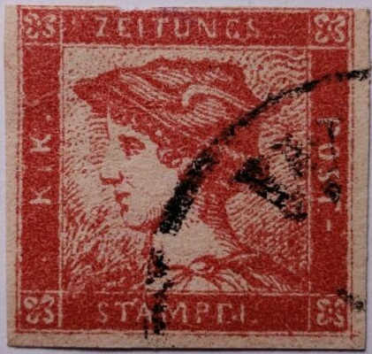
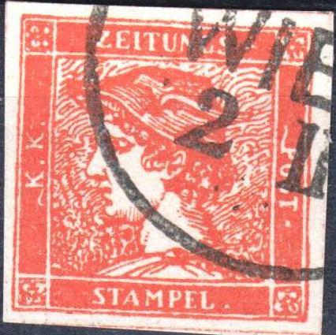
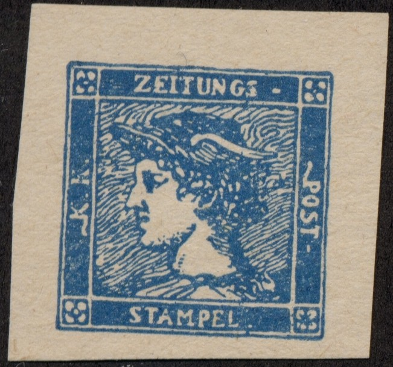
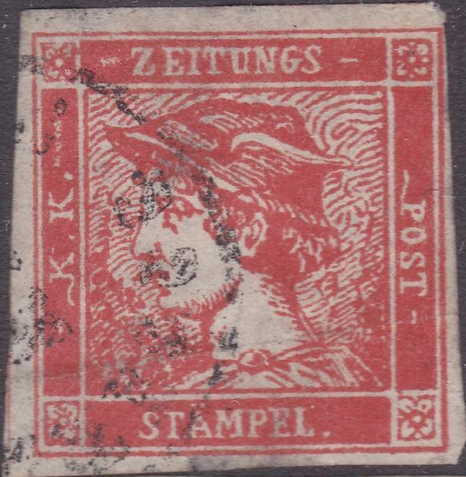
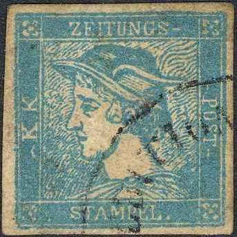
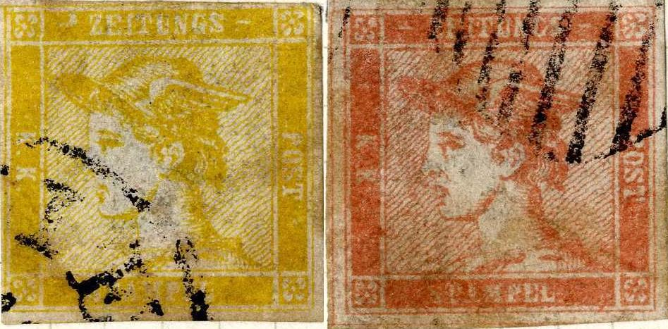
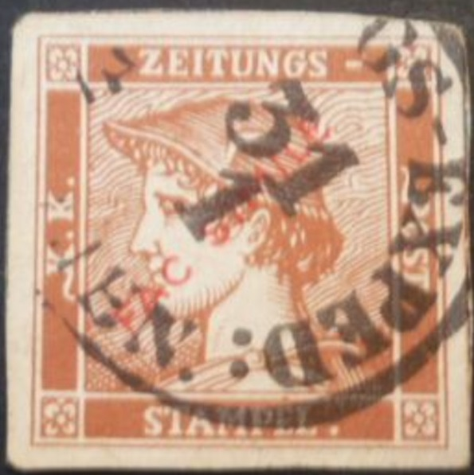

{kind=link}

{kind=link}



{kind=link}

Return To Catalogue - Austria newspaper stamps of 1851 forgeries, part 2 - Austria Newspaper stamps of 1858 and later - Austria overview
Note: on my website many of the
pictures can not be seen! They are of course present in the
catalogue;
contact me if you want to purchase the catalogue.
  
(0.6) k blue (Blauer Merkur) (0.6) k yellow (Gelber Merkur) (6) k red (Rosa Merkur) (30) k orange (Zinnober Merkur, rarest stamp of Austria)
These stamps are the first newspaper stamps in the world and
were issued on the 1st January 1851 (except the orange stamp).
They could also be used in Austrian Italy.
The blue stamp was intended to be used for one newspaper, the
yellow stamp for 10 newspapers and the red (rosa) stamp for 50
newspapers. The rosa stamp wasn't used very much and it was
decided in October 1852 to use it as if it was a blue stamp (most
of the red stamps are used as such). The design on the yellow
stamp was badly visible and forgeries made by chemical means from
the blue stamp appeared. It was therefore decided to introduce
the orange stamp (zinnober or zinnoberrot in German) in March
1856. The remaining yellow stamps were used up as blue stamps
(for one newspaper). The orange stamp was in little demand and
was declared invalid on 31 December 1858. Most of these stamps
were thrown away with the newspapers, and especially the orange
stamp has become a mayor rarity. Source:
http://www.extrafast.de/articles/564696.html (in German).
For the specialist: Three types exists of these stamps. The blue
stamp was printed in all three types. The yellow and red stamp
were printed only in type I. The orange stamp was printed in type
III only. In type I the "G" of "ZEITUNGS" has
no crossbar and the dots on "A" of "STAMPEL"
are evenly placed on the "A". In type II the
"G" also has no crossbar, but the right dot on the
"A" is placed sligthly more to the left, so the two
dots are closer together. In the last type, type III, the
"G" has a crossbar and the "A" is as in type
II. Most of these stamps are rare, since they were thrown away,
together with the newspapers.


Type I and pair of type II.
Value of the stamps |
|||
vc = very common c = common * = not so common ** = uncommon |
*** = very uncommon R = rare RR = very rare RRR = extremely rare |
||
| Value | Unused | Used | Remarks |
| blue | RR | R | Number of stamps printed: 136000000 Cheapest reprints: * |
| yellow | RRR | RRR | Cheapest reprints: *** |
| red | RRR | RRR | Cheapest reprints: *** |
| orange | RRR | RRR | Number of stamps printed: 120000 Cheapest reprints: *** |
The forgeries below are probably Spiro forgeries. The front of the tunic starts at the "T" of "STAMPEL". In the genuine stamps, the front of the tunic starts before the "S". There is a "." instead of a "-" after "ZEITUNGS" (this is not visible in the stamp below, however). (information taken from 'the Spud Papers'). I have only seen these forgeries with the cancel dots in a square as shown below or uncancelled. Fournier also sold these Spiro forgeries (second choice as he offered them), he offered the four values for 1 Swiss franc (in his 1914 price list). I've seen red, blue and yellow Spiro forgeries.



Spiro forgeries. This is also the first forgery described in
Album Weeds. They are usually cancelled with a pattern of dots,
but more 'improved cancels' exist.
Fournier forgeries:
Fournier forgeries as shown in the Fournier Album (reduced
sizes).

Fournier forgery with forged Breitensee and Wien cancels


Fournier forgery with "RADOTIN 6/12 50" cancel.
Besides the Spiro forgeries, Fournier also offered better forgeries (1st choice as he offered them); the five values (I don't know what the fifth stamp is supposed to represent, maybe one of the types of the blue stamps?) for 5 Swiss francs (also from Fournier's 1914 price list). There is a bright white spot in the internal lower left frame. Some of the subtypes have a dot instead of a line behind 'POST'. In my opinion, the right bottom corner of the inner rectangular design is a bit rounded (resulting in a white space there). According to the site: http://forgeriesofitalianstates.com/Lombardy/Lombardy.htm the dots are missing on these Fournier forgeries. It seems that the following cancels were used on these forgeries:
Fournier cancels, reduced sizes
"HAID 18/4 56" in a single circle
"RADOTIN 6/12 50" in a single circle
"9 -11 N WIEN 2 III" in a single circle
"JUNGLINSTER 13/12 87 6-7 M." in double circle (this
cancel is actually a cancel used on forgeries of Luxemburg)
"EKENAS APR 8 1856" in a rectangle
"BREITENSEE 17/12 52" (listed under
Mecklenburg-Schwerin)
Page from a Fournier Album; the second red stamp has the
"RADOTIN 6/12 50" forged cancel. The second yellow
strip are actually Spiro forgeries.
More Fournier forgeries.
Other forgeries exist, examples:



The background and corner ornaments are quite different in the
above forgeries. In my opinion, the oblique shading lines in the
left bottom central rectangular area do not appear in the genuine
stamps. Furthermore, the margins around the stamps are too large.
I've also seen blocks of four of these forgeries including the
blue stamp. The top of the ear is missing and the mouth is quite
short. Note the broken "S" of "STAMPEL" in
one of the red forgeries above.



Some forgeries made by the same forger; The front of the tunic
starts at the end of "S" of "STAMPEL". In the
genuine stamps, the front of the tunic starts before this letter.
Also, the background is too dark at the right hand side. The
cancel consists of a circle with unreadable letters on these
forgeries, which appears to be one of the VF
Cancelled forgeries. This is most likely the second forgery
described in Album Weeds.

Some blur forgeries with "WIEN" cancel

Other forgery.



Forgeries with the "S" of "STAMPEL" very
strange, the face of the figure is also different. The cancel
appears to be "ZEITUNGS EXPEDITION...", which also
appears on other forgeries.

Another forgery with guidelines around the stamp, the top of the
head too far from the upper frame and also with a "ZEITUNGS
EXPEDITION...", which also appears on other
forgeries, but this forgery is of a different design.
(Forgery, reduced size)

Primitive forgery of the red stamps with very broad white band on
wing and lettering too large; the back of the head is outlined
with a white line. The cancel appears to be printed on it.



Forgeries with an even wavy background. The letters
"K.K." are printed upside down. This is the third
forgery described in Album Weeds.

Rather deceptive forgery with a 'VENEZIA' cancel. I have seen
another forgery of this type with the same cancel (in the Carl
Kane collection auctioned with Rumsey Auctions). The word
'ZEITUNG' is too fat and there is no '-' behind it. The ear is
too thin. The 'P' of 'POST' is too fat. The background design is
different (for example in the upper right corner).


Other forgery with different lettering and slightly different
background pattern; the wing on the hat is almost straight at the
top instead of curved. In the middel such a red forgery with
cancel "ZEITUNGS - EXPED. WIEN 6/10" in a circle
cancel. At the right hand side two blackprints or 'Schwarzdrucke'
of this particular forgery. The dots behind "K.K." are
too big. The lines of the clothes above the "STA" are
too parallel and not like the genuine stamps.
A forgery with cancel 'ZEITUNGS EXP 31/10 9 U.' in an ellipse
Forgery of the blue stamp with a very clear ear. The white lines
on the hat and the wing are also very clear. I've seen blocks of
four stamps of this forgery (printed very wide apart).
Other primitive forgery, it looks like there is a 'circle' on top
of the hat of Mercury. I've also seen this forgery in the color
yellow. The catalogue of Placido Ramon de
Torres "Album Illustrado para Sellos de Correo" of
1879 also has a very similar image on page 47 (information passed
to me thanks to Gerhard Lang, 2016).


And a rather blur yellow forgery and a red forgery made by the
same forger.

Forgery with a strange face.


Some kind of forgeries or reprints, even in the color grey.

Forgery with red "FAC SIMILE" overprint and
"ZEITUNGS- EXPED: WIEN 31 1" cancel.
Austria newspaper stamps of 1851 forgeries, part 2
Austria Newspaper stamps of 1858 and later
{kind=link}
{kind=link}
{kind=link}
{kind=link}
{kind=link}
{kind=link}
{kind=link}